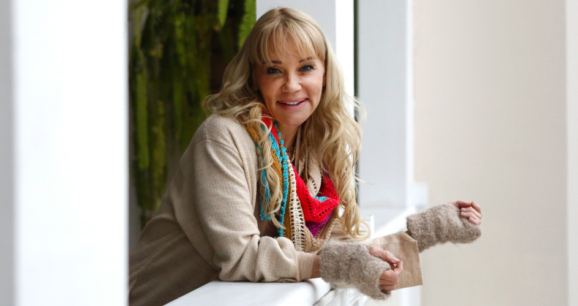

Nacida en Alemania, en 1971, Gutsche siempre se interesó en las artes culinarias. Curiosamente, además de la cocina, desde muy joven se sentía atraída por la cultura del Perú, país que, sin ella saberlo, la adoptaría años más tarde. “Desde que estaba en el kínder vestía con poncho y chullo (prendas típicas de la nación sudamericana)”, comentó la cocinera durante una entrevista ofrecida al diario El Comercio. Allí explicaba que por motivos laborales, su familia se mudaba constantemente de una ciudad a otra. “Pobre de mi madre, ya sea en Hamburgo, donde nací, y después en Francia, adonde nos mudamos, tenía que buscarme ropa típica del Perú, pues era la que me gustaba usar”. Incluso narra cómo apenas al tener la mayoría de edad pidió a sus progenitores la oportunidad de viajar por cuenta propia a tierras andinas, para descubrir su cultura. “Al bajar del avión me dije: ‘acá quiero quedarme toda la vida, este es mi país”.
